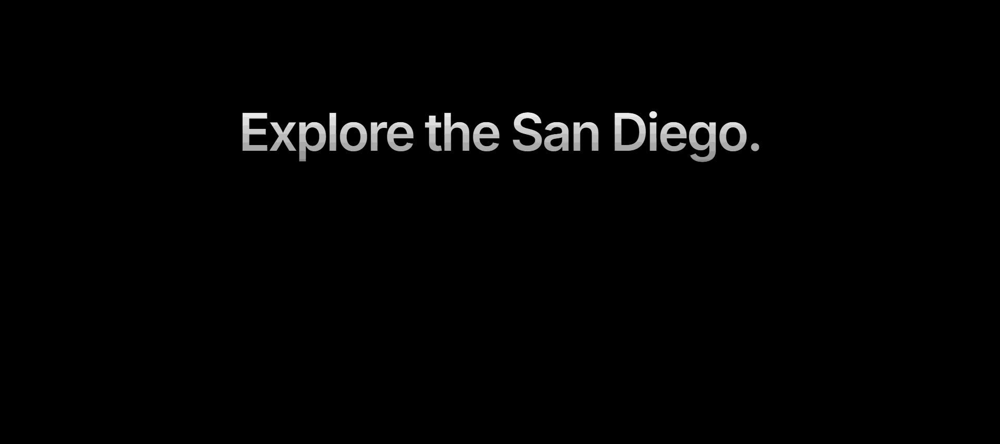
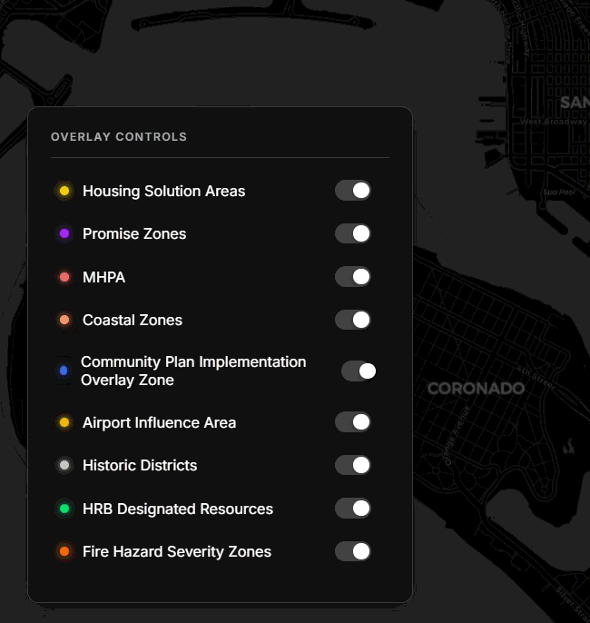
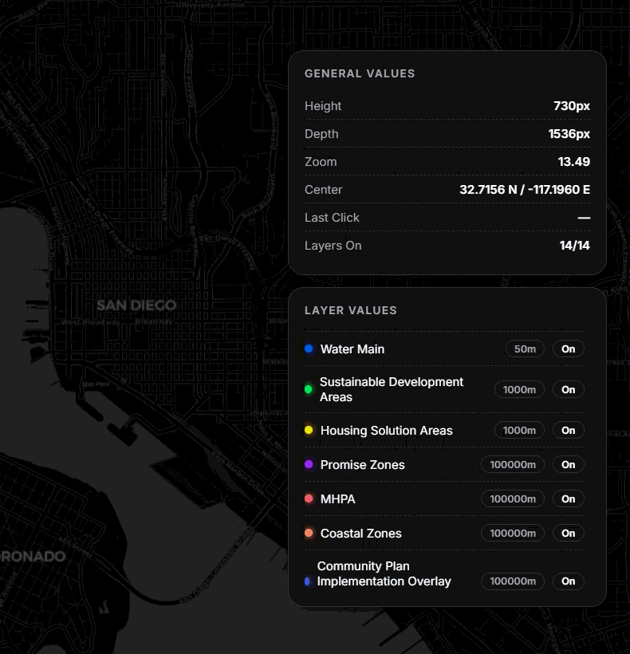

For 2 years, I prototyped new ways to engage with computer interfaces, mostly working with voice and AI. Brain was one of the first companies to explore the idea of multimodal, generative interfaces. My time
working with the team has shaped many of the principles I design with now. Most of my work stayed in R&D but pieces of it have shipped and are now in the app store ↗.

Multimodal search with the ability to give follow-up queries

Closer look at query architecture

Improve navigation and usability with a persistent search bar.

Redesigned notifications to be more communicative and systematic across domains.
Designed a better way for people to view their preferences and purchase details.
Expandable cards that can be collapsed for a more compact view.
LED designs for an experimental feature, meet up, where users can find restaurants and make reservations based on location and preference. The app leverages user location data to find top Yelp rated restaurants geographically close to both users.
Prototyped intelligent restaurant suggestions based on user preference and order history.